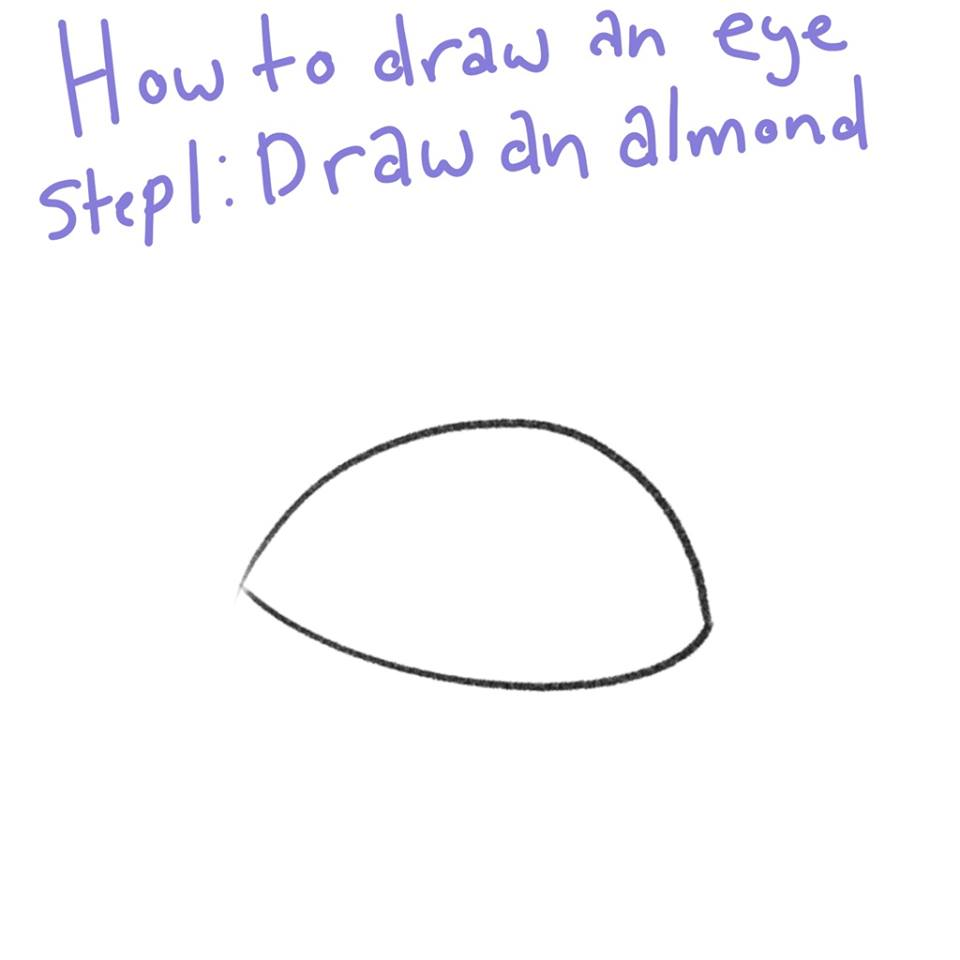
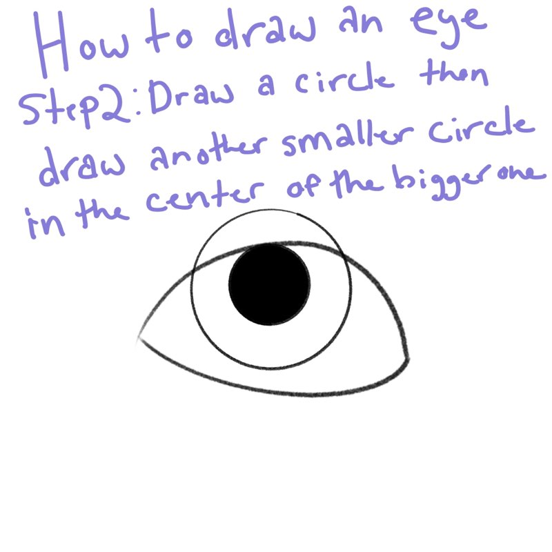

How to Draw an Eye
by Madelyn Goffena
The Three Steps to an Eye
- Step 1: Draw an almond shape.
- Step 2: Draw a circle were you want the eye to be looking then draw a smaller black circle in the center of the larger circle.
- Step 3:Erase the parts of the circles that are outside the almond shape then add details. You now have an eye! Good luck on drawing the other one!